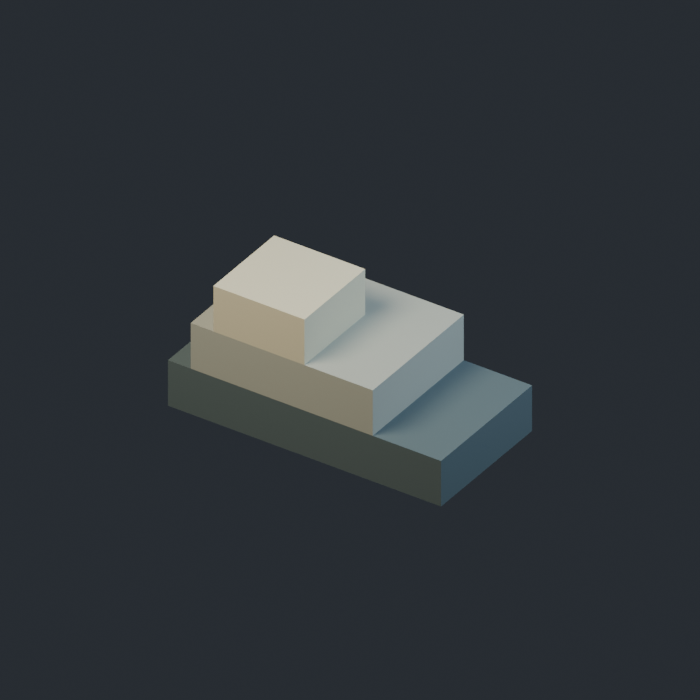
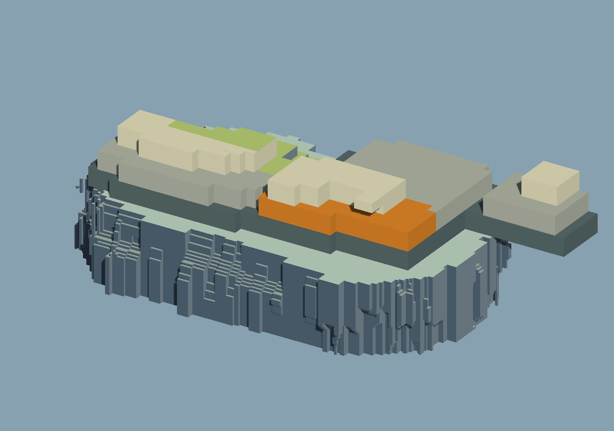
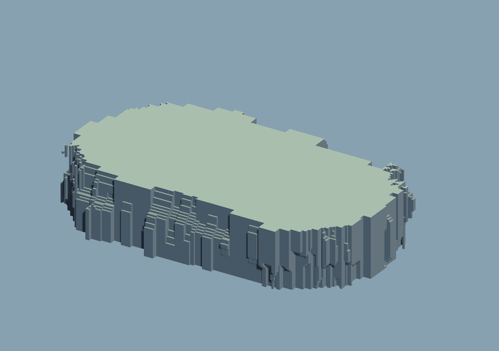

星骸回廊 / 地貌研究
LE-04 · BASIC TERRAIN
从一个参考，画出连续地形
保留可编辑的形体，
只显示合并后的表面。
这一轮集中完成基础地貌的局部塑形、区域上色和形色参考笔刷。下方全部结果图来自 Unity 中同一场景、同一固定相机。

真实来源
本轮实际用了什么参考？
两个原创工坊模型，分别提供外形和普通颜色分布。连续绘制会重新采样这些参考并与地形求并集；场景里不会留下沿路径排队的一串原始模型。

操作顺序
从基础地形到可继续编辑的结果
选择左侧步骤查看当时的实际几何。这里展示相机渲染；编辑器按钮、表面范围和导航事件的验证记录另见下方报告。

同机位对照
拖动分界线，看实际变化
左侧是基础地形，右侧是完成上色、参考连续生成和局部削减后的场景。

继续操作
场景与完整作者文件
Unity 原生场景保存地貌状态、参考源、画笔参数和实际网格。完整 v2 文件可重新打开继续改形、上色；FBX 用于移交，保留颜色贴图。

Assets/LE04/Scenes/LE04_Workflow.unity
重开结果等待验证记录。
这一轮的边界
基础地貌与用途专属搭建分开
- 参考提供形状和普通颜色，不理解建筑或雪岩的设计含义。
- 屋顶、楼梯、桥、真实雪岩分层等专用规则属于后续独立工具。
- 原始模型可单独与地貌摆在同一场景；本轮没有制作这些专用工具，也不要求互相焊接。
查看本次实际来源与结果指纹
等待实机记录。